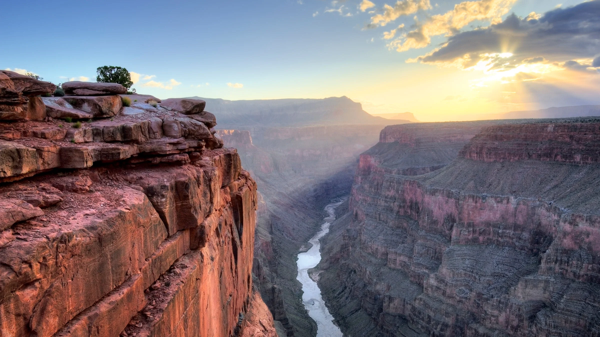

Travel
Lake Tahoe


Geographical Location: North America
“When it comes to things to do in South Lake Tahoe, you can shred down the mountain from 10,067 ft. at Heavenly Mountain Resort’s peak or you can dive into the depths of Lake Tahoe. It’s more than 1600 ft. deep, making it one of the deepest lakes in North America. Needless to say, there’s plenty of things to do in Lake Tahoe above and below the surface.”
“All parts of Lake Tahoe are beautiful and have something unique to offer. South Lake Tahoe is popular for its ski resorts like Heavenly, Sierra at Tahoe, and Kirkwood ski resorts. South Lake Tahoe is also popular for its restaurants, shopping, casino resorts, and vibrant nightlife.”
Photo Gallery
Stateline Lake Tahoe

Tahoe Beach Retreat Aerial

Best Thing to Do in Lake Tahoe Before Summer Ends

Firepit at Zephyr Cove RV Park

Hikers Watching Sunset

Niagara Falls


Geographical Location: North America
Niagara Falls is located on the border between Canada and the United States. Connecting Lake Erie and Lake Ontario, Niagara Falls has the highest flow rate of any waterfall in North America. Niagara Falls draws in thousands of visitors every year, and for good reason. As such, there are numerous things that you can see while you visit the falls, and it is very easy to make a full trip out of seeing this wonderful sight.
Photo Gallery
The 'Horseshoe'

A Rainbow in Niagara Falls

A Sunset at Niagara Falls

A Colorful View of Niagara Falls

A Distant Look at Niagara Falls

Grand Canyon National Park


Geographical Location: North America
The Grand Canyon is a breathtaking natural wonder located in Arizona, USA, carved by the Colorado River over millions of years. Stretching over 277 miles long, up to 18 miles wide, and over a mile deep, this iconic landmark showcases intricate layers of rock that tell a complex geological history. Its monumental scale and intricate and colorful landscape offer some of the most overwhelming vistas in the world.
Visitors from around the globe flock to the Grand Canyon National Park to witness its grandeur. Whether they experience it by hiking its numerous trails, rafting in the Colorado River, or simply observing from one of the many overlooks, the Grand Canyon offers an unparalleled experience of awe and wonder. Its overwhelming size and intricate and colorful landscape offer a unique spectacle unsurpassed in its ability to illustrate the sheer power of natural forces.
Photo Gallery
Full View of Grand Canyon

View of the Grand Canyon from Above

Sunrise at the Grand Canyon
Grand Canyon in the Sun

Sunset at the Grand Canyon

Colosseum in Rome


Geographical Location: Europe
Rome is one of the oldest metropolitan areas in the world. With a history dating back to 700 BC with the birth of the Roman Empire, the city has maintained its status as a cultural and historical hub of Europe. The city is peppered with ancient monuments, statues, and piazzas from different eras of history. The most famous location, the Colosseum, is touted as one of the seven modern wonders of the world. Rome houses several world-famous museums, such as the Borghese and the Vatican Museum. It is also the only city in the world to encompass a recognized country, Vatican City.
Rome is also a great location for food, wine, and leisure. At the heart of Italy, Rome is a central gathering place for a diverse array of Italian cuisine; Neapolitan Pizza from the south, Tuscan wine, and truffle from the north. Rome’s most famous dish is carbonara. Beyond the food, Rome has a vibrant nightlife. The Trastevere neighborhood has plenty of bars and clubs for patrons, and just over the river, Centro’s shopping district is always bustling.
Photo Gallery
Trevi Fountain

Vatican City Aerial View

Spanish Steps

Roman Forum

Victor Emmanuel Monument

Vermont


Geographical Location: North America
Vermont, located in the northeastern United States, is a state renowned for its natural beauty and charm. It is known for its breathtaking mountain ranges, serene lakes, dense forests, and captivating rural landscapes. The Green Mountain National Forest covers much of the state, offering abundant outdoor activities and adventure opportunities. In winter, skiers flock here to enjoy snow-covered slopes, while summer beckons hikers, cyclists, and campers to explore its pristine wilderness. Furthermore, Vermont boasts picturesque small towns with a countryside vibe and a unique farming landscape, making it a destination where rural charm thrives. Whether you're seeking the beauty of nature or embracing a tranquil way of life, Vermont is a place worth visiting.
Vermont is celebrated not only for its natural beauty but also for its distinctive culture and historical heritage. The state, as the 14th to join the United States, is considered one of the birthplaces of the American Revolution, and as a result, it is rich in historical landmarks and monuments. Additionally, Vermont takes pride in its emphasis on environmentalism and sustainable living, with communities often encouraging organic farming, farmers' markets, and craftsmanship. Furthermore, the state is well-known for its vibrant arts and music culture, offering a plethora of cultural experiences with various music festivals, art galleries, and performing arts venues. In essence, Vermont is a place where the blend of natural splendor, historical legacy, and cultural vibrancy attracts people of diverse interests and backgrounds to explore its wonders.
Photo Gallery
Fall Foliage Road Trip

Cozy Cabin Stay

Lake Willoughby

Bingham Falls in Stowe

Quechee Gorge